Eclipse Communication Framework (ECF)Eclipse Communication Framework (ECF)
Eclipse Communication Framework (ECF)Eclipse Communication Framework (ECF)
ECF allows you connect to others developers using the protocols XMPP, MSN, Yahoo, ECF, IRC, JMS, Zeroconf/Bonjour, and others. Upon installation, ECF creates a new perspective for the workspace called 'Communications'. To access this perspective, click on the 'Communications' button in the upper right of the workspace:
To connect to Instant Messaging (IM), click on ECF Connection icon and select XMPPS protocol:
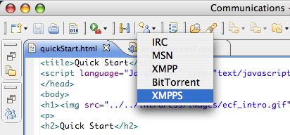
Fill out the Connection Wizard with your account:
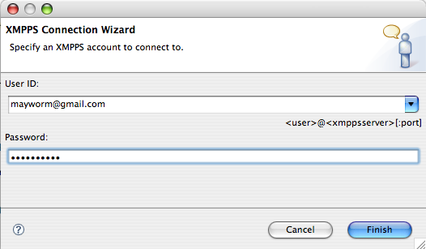
A Contacts View will appear with your contacts:
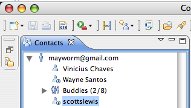
To send a message click over the contact with right button:
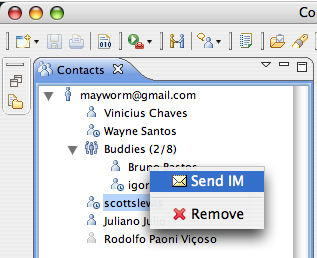
After that, type your message on a Messages View:
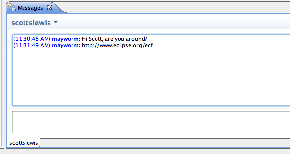
To connect to IRC channel, click on ECF Connection icon and select IRC protocol:
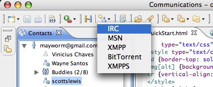
Fill out the Connection Wizard with IRC channel information:
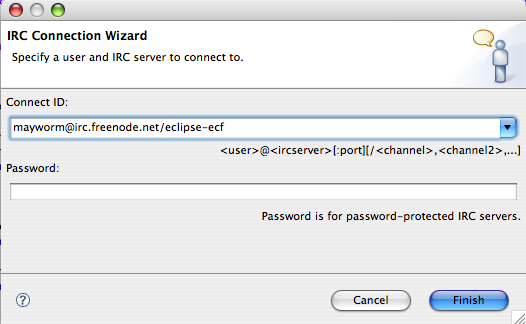
A Chat IRC View will appear:
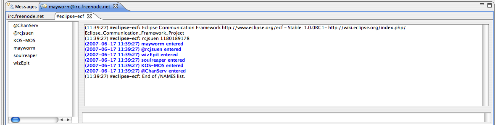
Using ECF Collaboration Group, you can provide Shared Workspaces:
To connect to ECF Collaboration Group, click on ECF Connection icon and fill out the connection wizard:
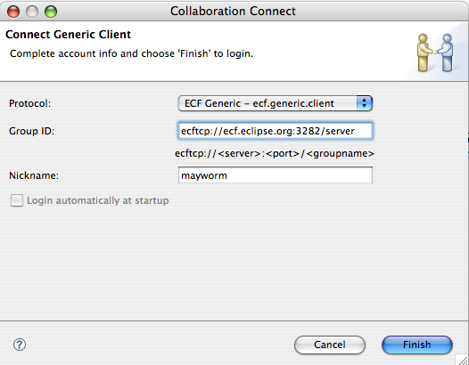
A Collaboration View (ECF Generic) will appear:
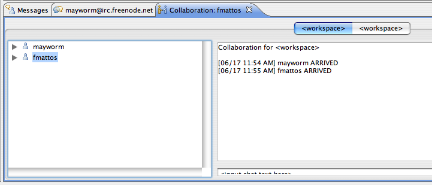
Click with right button over a contact into ECF buddy list, and you will can share url, send file, send messages and others:
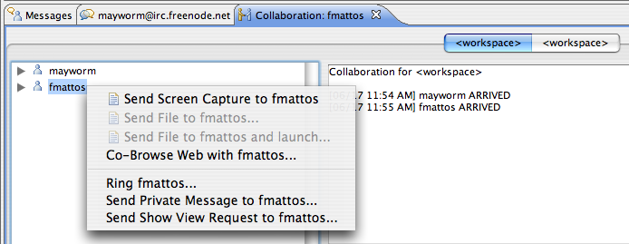